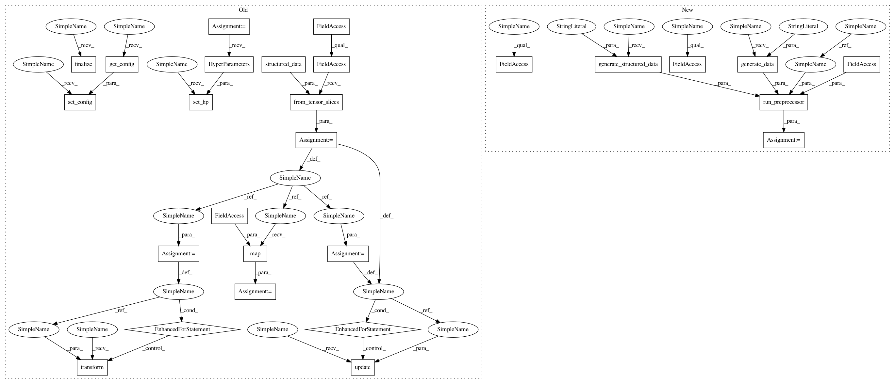

a0351c62548ebddf5c728ec525ad61a4f7827494,tests/hypermodel/test_preprocessor.py,,test_feature_engineering,#,132
Before Change
def test_feature_engineering():
data = structured_data()
dataset = tf.data.Dataset.from_tensor_slices(data)
feature = preprocessor.FeatureEngineering()
feature.input_node = ak.StructuredDataInput(column_names=COLUMN_NAMES_FROM_NUMPY,
column_types=COLUMN_TYPES_FROM_NUMPY)
feature.set_hp(kerastuner.HyperParameters())
for x in dataset:
feature.update(x)
feature.finalize()
feature.set_config(feature.get_config())
for a in dataset:
feature.transform(a)
def map_func(x):
return tf.py_function(feature.transform,
inp=[x],
Tout=(tf.float64,))
new_dataset = dataset.map(map_func)
assert isinstance(new_dataset, tf.data.Dataset)
def test_feature_engineering_fix_keyerror():
After Change
def test_feature_engineering():
dataset = common.generate_structured_data(dtype="dataset")
feature = preprocessor.FeatureEngineering()
feature.input_node = ak.StructuredDataInput(
column_names=common.COLUMN_NAMES_FROM_NUMPY,
column_types=common.COLUMN_TYPES_FROM_NUMPY)
new_dataset = run_preprocessor(feature,
dataset,
common.generate_data(dtype="dataset"),
tf.float32)
assert isinstance(new_dataset, tf.data.Dataset)
def test_feature_engineering_fix_keyerror():
In pattern: SUPERPATTERN
Frequency: 4
Non-data size: 27
Instances
Project Name: keras-team/autokeras
Commit Name: a0351c62548ebddf5c728ec525ad61a4f7827494
Time: 2019-09-29
Author: jhfjhfj1@gmail.com
File Name: tests/hypermodel/test_preprocessor.py
Class Name:
Method Name: test_feature_engineering
Project Name: keras-team/autokeras
Commit Name: a0351c62548ebddf5c728ec525ad61a4f7827494
Time: 2019-09-29
Author: jhfjhfj1@gmail.com
File Name: tests/hypermodel/test_preprocessor.py
Class Name:
Method Name: test_feature_engineering
Project Name: keras-team/autokeras
Commit Name: a0351c62548ebddf5c728ec525ad61a4f7827494
Time: 2019-09-29
Author: jhfjhfj1@gmail.com
File Name: tests/hypermodel/test_preprocessor.py
Class Name:
Method Name: test_feature_engineering_fix_keyerror